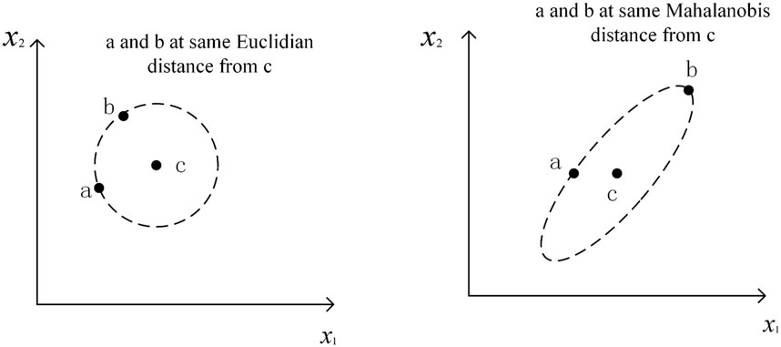

Matching
Data Analytics and Visualization with R
Session 10
Matching and Weighting Methods
Ideal Setting: Random Experiment
- When we run a randomized experiment, we are making sure that, on average, the treated and control groups are exactly the same before we apply treatment
- Gold standard implies that all causal inferences will be valid it you do the experiment right. Why?
- Randomization solves many internal validity issues:
- Selection: Treatment and control groups are comparable; people don’t self-select
- Goal: estimate ATE (average treatment effect)/CATE (conditional ATE)/ATT (ATE on the Treated)
- Under randomization, ATE = ATT because the selection bias is zero
Matching Is A Way of Closing Backdoors
Selecting a sample where people have similar levels of W (Z) is one way of controlling for W (Z)
Why Matching?
Reduces dependence of estimates on parametric models (i.e. coefficient estimates do not depend heavily on the model specification)
- Model dependence → researcher discretion → bias
Makes counterfactual comparisons more transparent: we make comparisons across comparable units
Alternative way to statistical control to close the backdoors
But: matching is NOT a solution for selection on unobservables, i.e. we still need to list all plausible confounders and assume that they are enough
Matching is an estimation technique, not an identification strategy
Model Dependence: All Data
\[ \color{white}{\beta_0 \text{E}^2} \]

Model Dependence: All Data
\[ \color{white}{\beta_0 \text{E}^2} \text{Outcome} = \beta_0 + \beta_1 \text{Education} + \beta_2 \text{Treatment} \color{white}{\beta_0 \text{E}^2} \]

Model Dependence: All Data
\[ \text{Outcome} = \beta_0 + \beta_1 \text{Education} + \beta_2 \text{Education}^2 + \beta_3 \text{Treatment} \]

Model Dependence: Subset
\[ \color{white}{\text{Outcome} = \beta_0 + \beta_1 \text{Education} + \beta_2 \text{Education}^2 + \beta_3 \text{Treatment}} \]

Model Dependence: Subset
\[ \color{white}{\beta_0 \text{E}^2} \text{Outcome} = \beta_0 + \beta_1 \text{Education} + \beta_2 \text{Treatment} \color{white}{\beta_0 \text{E}^2} \]

Model Dependence: Subset
\[ \text{Outcome} = \beta_0 + \beta_1 \text{Education} + \beta_2 \text{Education}^2 + \beta_3 \text{Treatment} \]

Matching in Nutshell
- We want to mimic the gold standard, RCT, by artificially creating a “control” group from the untreated observations to compare to our treated group
- In regression, we did this by removing explained variation with statistical controlling and comparing within values of control variables (explain-and-subtract the differences)
- In matching, we are doing this more explicitly by constructing a “control” group so that we compare treated cases to untreated ones that are closest on the values of all confounders
- We can’t observe what would have happened in the counterfactual where treated units didn’t get treatment, but if we pick the most-comparable untreated group possible, that’s about as close as we can get
- Assuming that the variables we picked are enough to block all the back doors, then such an artificially selected control group closes all the back doors
- Matching works because picking a sample where people have similar levels of \(W\) is one way of controlling for \(W\): once we remove all the variation related to \(W\), the leftover variation is explained by the treatment
Workflow for Matching
Step 1: Preprocessing. Do something to guess or model the assignment to treatment
- Hide the your main outcome variable for a while
- Pick a set of variables (confounders) to match on, i.e. matching variables
- Separate out the treated and untreated cases
- For each treated observation, check how “close” each untreated observation is on the matching variables and select the closest one (or few)
Step 2: Estimation. Use the new trimmed/preprocessed data to build a model and calculate the effects
- Go back to the main model and compare the average treated outcome vs. the average untreated outcome
Matching methods differ in how they deal with steps 3 and 4.
Various Matching Methods
Example for Two Counfounders
Exact Matching
- Preprocessing step
- Choose matches for treated units that have the same value in each \(X\)
- Discard all unmatched control units
- Estimation step
- Calculate the effect of interest
- Straightforward process
- No matching bias introduced
- Not feasible with high-dimesional or continuous data
- Strongly reduces the number of units if works
Exact Matching: No Observations Matched

Coarsened Exact Matching
- Preprocessing step
- Discretize and group covariates into substantively meaningful bins
- Exact match on these bins ⇝ accounts for interactions
- Have to drop treated units in bins with no controls (lack of overlap) ⇝ changes estimand
- Allows you to control bias/variance trade-off through coarsening
- Estimation step
- Calculate the effect of interest (ATE, ATT, ATC)
- Weight the untreated observations so each treated observation is matched to the same number of untreated ones
- Allows to control the amount of imbalance up front by setting the degree of the coarsening: coarser means more imbalance, fineness means less imbalance but also fewer matched units
- Can still break down in high dimensional datasets
Coarsened Exact Matching Results

Nearest Neighbor Matching
- Preprocessing step
- Find untreated observations that are very close/similar to treated observations based on confounders
- We can define closeness using lower-dimensional distance metrics, i.e. we reduce dimensionality in confounders
- Many different way to calculate the distance, e.g. propensity score, Euclidean, or Mahalanobis distance (accounts for covariances between variables)
- Estimation step
- Calculate the effect of interest on matched dataset
- Order of the matching matters in terms of which units get matched to which other units (when matching without replacement)
Distance Measures
Euclidean distance
For observations \(X_1\) and \(X_2\) with \(K\) number of matching variables:
\[ d(X_1,X_2) = \sqrt{\frac{\sum_{k=1}^K(X_{1k} - X_{2k})^2}{\hat\sigma^2_k}}, \] where \(\hat\sigma^2_k\) is the standard deviation of the \(k\)th variable
- Standardize the matching variables for them to have equal weight on the measure (divide by variables’ st. deviation)
- For each matching variable, compute the difference between values for two observations of interest and square that difference
- Sum the squared differences to get a single number and take a square root of that number
Mahalanobis distance
\[ d(X_1,X_2) = \sqrt{{(X_1-X_2)}'\widehat\Sigma^{-1}(X_1-X_2)} \]
- Euclidean distance adjusted for covariance in the data, \(\hat\Sigma\) (i.e. not only the variance of each variables separately as before)
- Intuition: if \(X_k\) and \(X_{k'}\) are two covariates that are highly correlated, then their contribution to the distances should be lower
- Easy to get close on correlated covariates ⇝ downweight
- Harder to get close on uncorrelated covariates ⇝ upweight
- This is what we want to use!
Distance Measures

1:1 Nearest Neighbour Matching without Replacement

1:1 Nearest Neighbour: Pairs

1:1 Nearest Neighbour: Matched Data

Problem: Curse of Dimensionality

- As the number of matching variables grows, the likelihood of finding exact matches, or approximate ones, for all units falls quickly
- The more covariates we have, the higher will be the distance between units and their matches
Other Matching Choices
- Matching ratio: how many control units per treated?
- Lower reduces bias (only use the closest matches)
- Lower increases variance
- ATT is easy to calculate with 1:1 exact matches on the treated units
- If number of control units varies by treated unit, need to weight observations to ensure balance
- With or without replacement: same control matched to multiple treated?
- With replacement gives better matches & matching order doesn’t matter
- Without replacement simplifies variance estimation
- Caliper: drop poor matches?
- Only keep matches below an arbitrary distance threshold
- Reduces imbalance, but if you drop treated units, estimand changes from ATT (ATE)
Inverse Probability Weighting
Weighting
Weighting for surveys: down-weight over-sampled respondents
| Young | Middle | Old | |
|---|---|---|---|
| Population | 30% | 40% | 30% |
| Sample | 60% | 30% | 10% |
| Young | Middle | Old | |
|---|---|---|---|
| Population | 30% | 40% | 30% |
| Sample | 60% | 30% | 10% |
| Weight | 30 / 60 0.5 |
40 / 30 1.333 |
30 / 10 3 |
- Multiply weights by average values (or use in regression) to adjust for importance
Propensity Scores
- Preprocessing step:
- Predict the probability of assignment to treatment using a model (e.g. with logit). This is the propensity score.
\[ \operatorname{log} \frac{p_\text{Treated}}{1 - p_\text{Treated}} = \beta_0 + \beta_1 \text{Education} + \beta_2 \text{Age} \]
- Estimation step: Calculate the effect of interest
- Use propensity scores (predicted probabilities) to weight observations by how “weird” they are:
- Observations with high probability of treatment who don’t get it (and vice versa) have higher weight
\[ IPW = \frac{\text{Treatment}}{\text{Propensity}} + \frac{1 - \text{Treatment}}{1 - \text{Propensity}} \]
- Propensity scores should not be used for NN matching as a measure of distance (King and Nielsen 2019)
- Instead, we can use them to weight each observation in the control group such that it looks like the treatment group
- You may want to trim the weights when they get too high (e.g., above 10)
Inverse Probability Weights
glm(treatment ~ age + education, edu_age, family = "binomial") %>%
augment(type.predict = "response") %>%
mutate(treatment = treatment %>% as.numeric() - 1) %>%
dplyr::select(education, treatment, age, propensity = .fitted) %>%
mutate(ip_weight = (treatment / propensity) + ((1 - treatment) / (1 - propensity))) %>%
slice_sample(n = 6) %>%
kable()| education | treatment | age | propensity | ip_weight |
|---|---|---|---|---|
| 21.31138 | 0 | 56.02607 | 0.2014031 | 1.252196 |
| 17.26641 | 1 | 39.98411 | 0.4491284 | 2.226535 |
| 18.56842 | 1 | 61.59597 | 0.2063161 | 4.846931 |
| 22.43608 | 0 | 65.42724 | 0.1263407 | 1.144611 |
| 21.49260 | 0 | 50.59117 | 0.2416299 | 1.318617 |
| 18.36010 | 1 | 39.27205 | 0.4288673 | 2.331723 |
- Inverse-probability weighting removes confounding by creating a “pseudo-population” in which the treatment is independent of the measured confounders
- Units who were assigned to the treatment group even though they were much more likely to be assigned to the control group are a rare, and we want to upweight them

Covariate Balance Assessment
Covariate Balance
- Goal of matching is to maximize covariate balance across treatment and “control” groups
- Ideally, we need to see if the joint distribution of all covariates in matching variables is similar between treated and matched controls
- In practice, check lower-dimensional summaries (e.g., standardized mean difference, variance ratio, empirical CDF difference)
- Hypothesis tests for balance are problematic: Dropping units can lower power (↑ p-values) without a change in balance
- If “control” and treatment groups differ, on average, try again
Covariate Balance Plot for NN Matching

Problems When Using Summary Stats

More Details on Workflow
- Check the balance before the matching
- Decide on covariates for which balance must be achieved
- Choose matching type (compute/estimate the distance/balancing score if necessary)
- Condition on the distance measure (e.g., using matching, weighting, or subclassification), i.e. create matched dataset
- Assess balance on the covariates of interest; if poor, repeat steps 2-5
- Estimate the treatment effect in the conditioned sample (i.e. matched dataset)
Assumptions
Conditional Independence Assumption
- The set of matching variables you’ve chosen is enough to close all back doors
Common Support Assumption
- There are appropriate control observations to match with treated units
- There must be substantial overlap in the distributions of the matching variables comparing the treated and control observations
Balance
- The approach to selecting a matched group has closed back doors for the variables we’re interested in
Main Takeaways
- Matching is a technique to reduce model dependence and avoid parametric modeling assumptions when no unmeasured confounders holds
- Lots of different ways to match, each has advantages and disadvantages. Try different methods and aim for best covariate balance
- Pay careful attention to the quantity of interest when you drop units